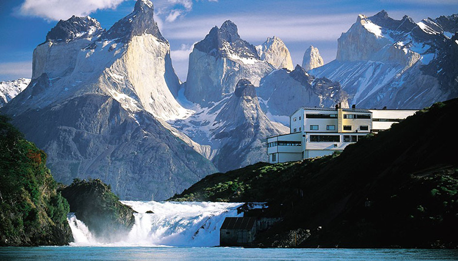

La Patagonia chilena, zona austral o región de los canales corresponde a una subregión de la Patagonia, caracterizada por ser una inmensa biorregión que presenta una geografía muy variada lo que redunda en una gran diversidad de paisajes, climas, cultura y ecosistemas: montañas, fiordos, canales e islas, debido al hundimiento de la cordillera de los Andes.
En Chile, la zona de la Patagonia no existe como un ente político, constituyendo solo un límite imaginario. La provincia de Palena es el territorio más septentrional de la Patagonia chilena. Tradicionalmente se considera que la Patagonia chilena comienza desde el Golfo de Corcovado hasta el Cabo de Hornos, cubriendo todo el territorio nacional desde el océano Pacífico hasta el límite con la Argentina.
Los atractivos naturales de la Patagonia chilena, y sus abundantes parque nacionales, hacen del turismo en la zona una de las principales actividades económicas. En diciembre de 2014, la sección de viajes de The Telegraph destacó «explorar la Patagonia» como la quinta de las veinticinco cosas que hacer antes de morir, mientras que, en octubre de 2016, la editorial de guías de viajes Lonely Planet la destacó como la sexta entre las diez regiones que había que visitar en 2017.
Teniendo como principales atractivos la laguna San Rafael, la Catedral de Mármol (en el Lago General Carrera) o las Torres del Paine, el turismo patagónico es un actividad en constante expansión que atrae a miles de visitantes extranjeros cada temporada.
